Review:
the principle of
accessing data
stored in data structure
Review:
the principle of
accessing data
stored in
the data structure:
- The
array
data structure is
designed for
speed
(sacrificing
flexibility):
- Every
array element in
an array can
be
access
immediately
-
Increasing the
size of an
array is
difficult or even
impossible
|
- The
linked list
data structure is
designed for
flexibility
(sacrificing
speed):
- Inserting
(= increasing the
size) into a
linked list is
easy
- We must
traverse (= take time !)
a list to
access
the list elements
|
- Accessing
data in
a data structure
depends on
how the
data structure is
organized
- How to
access a
data structure
depends on the
structure/organization of the
data structure
|
|
Review: the principle of
accessing
a
primitive variable
inside a
data structure
- All
data structures
(array and
linked list)
contain
at the
most basic level:
- Primitive typed
variables
|
- To access
a primitive typed
variable
(that is stored in
the memory),
you always
need to
know (= use):
- The
memory location (address) of
the (primitive typed) variable
- The
data type
(= number of bytes) used
to store the
(primitive typed) variable
(You need to know
which
load/store
instruction
(ldrsb/ldrsh/ldr and
strsb/strsh/str)
to use)
|
|
Linked list
- Linked list =
a linear
(single-way) linked data structure
used to
store information of
identical format
- The number of elements in the
linked list is
dynamic
- The location information of
the i+1th-element
in the list
is stored
inside the
ith-element
of the list
Therefore:
- We must
access the
ith-element
before we can
access the
i+1th-element
|
- The user
only know the
location of
the first element
of the linked list
|
A quick (short) refresher on linked list in Java
A sample
List class definition:
public class List {
int value;
List next; // A reference variable !
// Methods omitted for brevity...
}
|
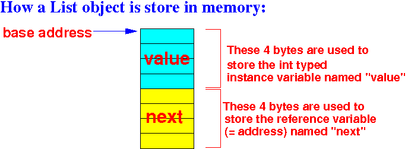
A quick
(short) refresher on linked list in Java
Java code used to
traverse a
linked list:
public static void main(String[] args)
{
List head; // head point to first element in the list
List ptr;
/* =============================================
CS171 material: traversing a linked list
============================================= */
ptr = head;
while ( ptr != null )
{
System.out.println( ptr.value );
ptr = ptr.next;
// ptr.next = the location of the next list elem
}
}
|
DEMO:
/home/cs255001/demo/List/list01.java
and list02.java
Programmer's view of
the linked list data structure
How a
programmer
perceives/accesses
a linked list
(review of CS171):
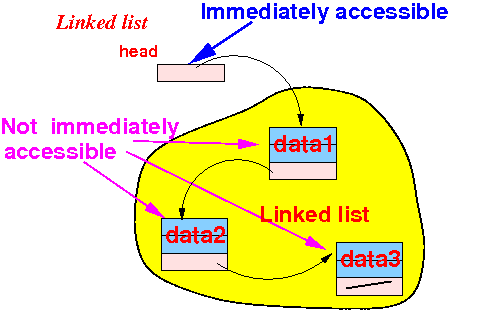
- The
programmer
only has
immediate access
to the
List typed variable
head
|
Programmer's view of
the linked list data structure
How a
programmer
perceives/accesses
a linked list
(review of CS171):
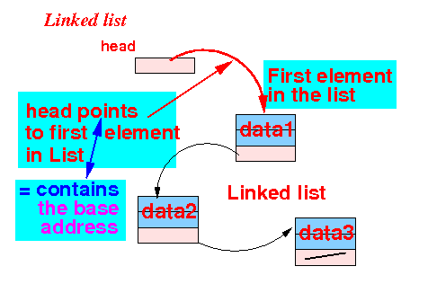
- The reference variable
head
(usually called "head")
contains the
base address of
the first element in
the Linked list
(i.e.: "head points to first list elem")
|
How is a linked list perceived and
used
by a programmer
The list elements
are
chained
in sequence using the
next
reference variable in
the List objects:
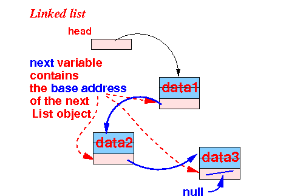
- Every
list element
contains
a reference (= base address)
of the
next
list element
|
How is a linked list stored in memory
by a programmer
How a
linked list is
implemented:
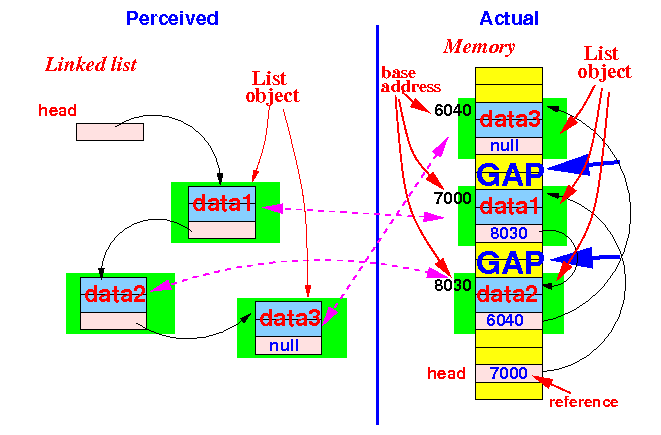
-
Note:
the
List objects are
not stored consecutively
in memory !!!
|
How is a linked list stored in memory
by a programmer
How a
linked list is
implemented:
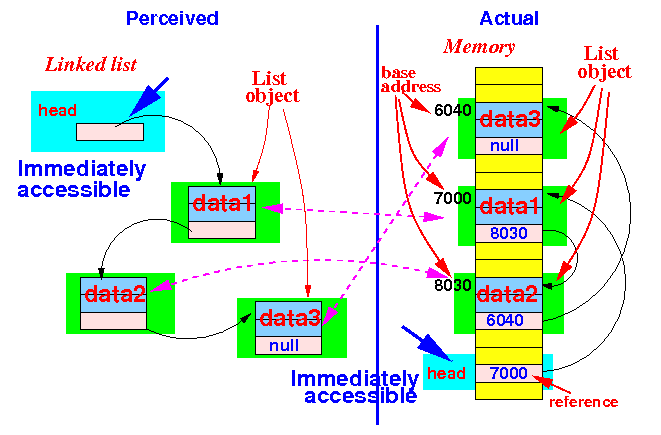
- The
programmer
only has
immediate access
to the
List typed variable
head
|
How is a linked list stored in memory
by a programmer
How a
linked list is
implemented:
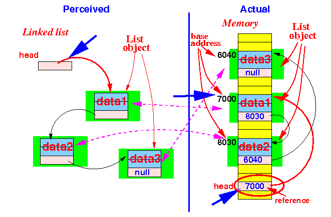
- The reference variable
head
(usually called "head")
contains the
base address of
the first element in
the Linked list
(i.e.: "head points to first list elem")
|
How is a linked list stored in memory
by a programmer
The list elements
are
chained
in sequence using the
next
reference variable in
the List objects:
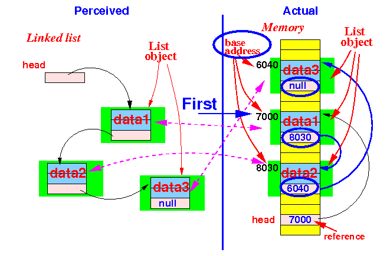
- Every
list element
contains
a reference (=
base address)
of the
next
list element
|
How to access
list objects in a
linked list
How to
access
components (primitive variables)
in the
first
List object in
a linked list:
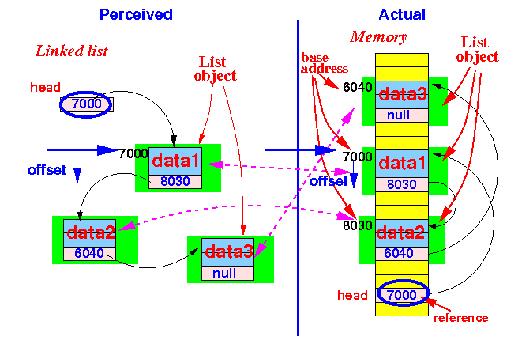
- Use the
base address in
the variable
head
to access the
components in
the
first
List object
(use the
correct offset for
each
component)
|
How to access
list objects in a
linked list
How to
access
components (primitive variables)
in the
second
List object in
a linked list:
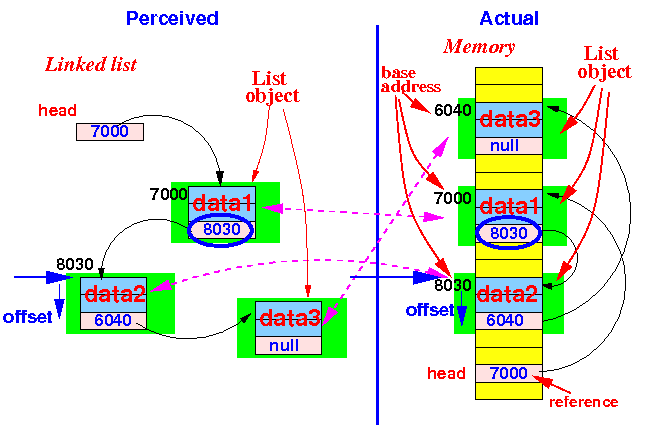
- Use the
base address in
the variable
head.next
to access the
components in
the
second
List object
(use the
correct offset for
each
component)
|
How to access
list objects in a
linked list
How to
access
components (primitive variables)
in the
third
List object in
a linked list:
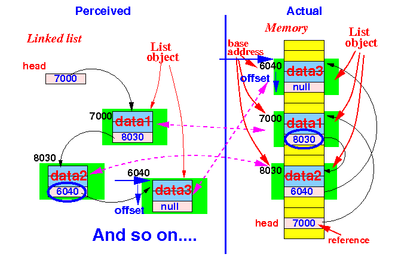
- Use the
base address in
the variable
head.next.next
to access the
components in
the
third
List object
(use the
correct offset for
each
component)
|
Summary: How a
linked list is
stored in
memory
Only the
variable
head is
accessible by
the program:
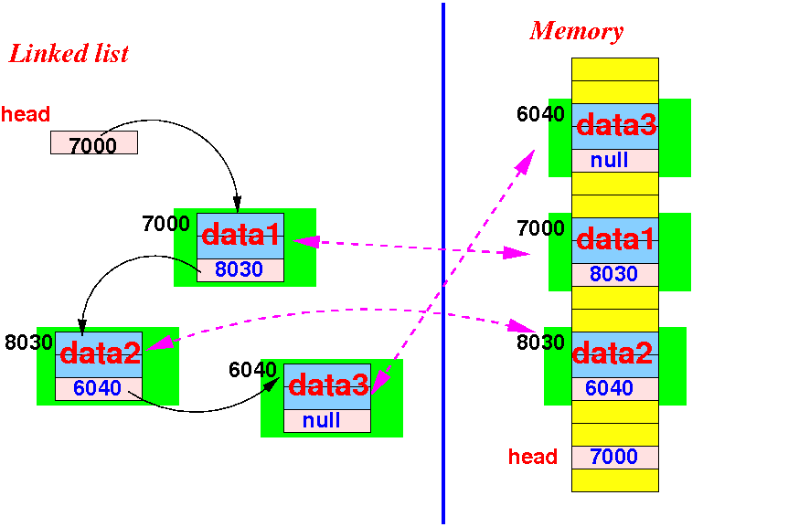
Summary:
How to access
list objects in a
linked list
Start with
head and
follow the
base addresses in the
next
variables in the
list objects:
❮
❯